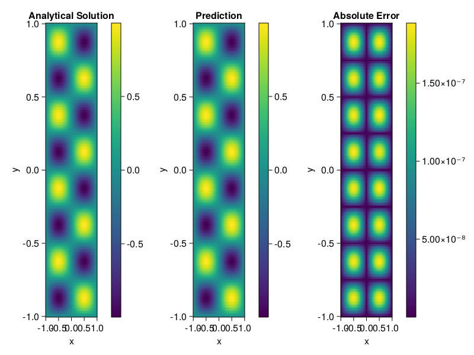

Helmholtz equation
Let us consider the Helmholtz equation in two space dimensions
\[\begin{aligned} &\Delta u(x, y)+k^{2} u(x, y)=q(x, y), \quad(x, y) \in \Omega:=(-1,1)^2 \\ &u(x, y)=0, \quad(x, y) \in \partial \Omega \end{aligned}\]
where
\[q(x, y)=-\left(a_{1} \pi\right)^{2} \sin \left(a_{1} \pi x\right) \sin \left(a_{2} \pi y\right)-\left(a_{2} \pi\right)^{2} \sin \left(a_{1} \pi x\right) \sin \left(a_{2} \pi y\right)+k^{2} \sin \left(a_{1} \pi x\right) \sin \left(a_{2} \pi y\right).\]
The excat solution is $u(x,y)=\sin{a_1\pi x}\sin{a_2\pi y}$. We chose $k=1, a_1 = 1$ and $a_2 = 4$.
using ModelingToolkit, IntervalSets, Sophon, Lux
using Optimization, OptimizationOptimJL
@parameters x,y
@variables u(..)
Dxx = Differential(x)^2
Dyy = Differential(y)^2
a1 = 1
a2 = 4
k = 1
q(x,y) = -(a1*π)^2 * sin(a1*π*x) * sin(a2*π*y) - (a2*π)^2 * sin(a1*π*x) * sin(a2*π*y) + k^2 * sin(a1*π*x) * sin(a2*π*y)
eq = Dxx(u(x,y)) + Dyy(u(x,y)) + k^2 * u(x,y) ~ q(x,y)
domains = [x ∈ Interval(-1,1), y ∈ Interval(-1,1)]
bcs = [u(-1,y) ~ 0, u(1,y) ~ 0, u(x, -1) ~ 0, u(x, 1) ~ 0]
@named helmholtz = PDESystem(eq, bcs, domains, [x,y], [u(x,y)])\[ \begin{align} \frac{\mathrm{d}}{\mathrm{d}y} \frac{\mathrm{d}}{\mathrm{d}y} u\left( x, y \right) + \frac{\mathrm{d}}{\mathrm{d}x} \frac{\mathrm{d}}{\mathrm{d}x} u\left( x, y \right) + u\left( x, y \right) =& - 166.78 \sin\left( 3.1416 x \right) \sin\left( 12.566 y \right) \end{align} \]
Note that the boundary conditions are compatible with periocity, which allows us to apply BACON.
chain = BACON(2, 1, 5, 2; hidden_dims = 32, num_layers=5)
pinn = PINN(chain) # call `gpu` on it if you want to use gpu
sampler = QuasiRandomSampler(300, 100)
strategy = NonAdaptiveTraining()
prob = Sophon.discretize(helmholtz, pinn, sampler, strategy)
@time res = Optimization.solve(prob, BFGS(); maxiters=1000)u: ComponentVector{Float64}(filters = (filter_1 = (bias = [-0.1115155895432131; -0.8005926708207408; … ; -0.9245746926206592; 0.678812701696049;;]), filter_2 = (bias = [-0.4326763152330084; 0.07660326787274103; … ; 0.8503446997631656; 0.5396009969719114;;]), filter_3 = (bias = [-0.7909719539325107; -0.5533695746442635; … ; 0.034575766049466015; -0.34648539564104697;;]), filter_4 = (bias = [-0.7030614825017472; -0.6448128033476368; … ; -0.2785893569039238; -0.3071233226307865;;]), filter_5 = (bias = [-0.08878457847860345; -0.7106342762799149; … ; -1.007386769186271; -0.4591131461952469;;])), linear_layers = (layer_1 = (weight = [-0.012601575454574805 -0.266600599271116 … -0.2454457474964562 -0.14066157247709413; 0.1475288160033953 0.0417840451677475 … -0.4019013746019129 0.3999836615228644; … ; -0.01962210001157441 -0.03350409241018946 … 0.28148724466747865 -0.0967135929970972; -0.31290091054443564 0.015973650904440938 … 0.32498709734594317 0.12887771615799185], bias = [-0.023986170371340303; 0.03580670979107597; … ; -0.03623734628233142; -0.006863683852542364;;]), layer_2 = (weight = [0.2719257533138654 -0.3492089567542457 … -0.15272498453922778 -0.28020463731199663; 0.10997163033515406 0.31611321345091004 … -0.35506798678883367 0.05711679252386055; … ; -0.40788788713454793 -0.2754051592888002 … 0.07821927055570187 0.17126656970569262; -0.3968892329297816 0.07264517150072712 … 0.12445399685822776 -0.4036199644904615], bias = [0.0069139746786007665; 0.021062602862441184; … ; 0.012107673573278977; -0.010208865210115171;;]), layer_3 = (weight = [-0.09347726788362704 -0.0014417304829818117 … -0.28186315003637824 -0.1669320066985513; -0.0776952021170044 -0.4128841021353554 … 0.3198676679931689 -0.2517134337343299; … ; 0.18920892849609294 -0.2593756976280984 … -0.4539511761826453 0.20543249053415624; 0.08593360941161227 -0.44516703407850183 … -0.23853898421768704 0.17520010334423314], bias = [0.010114578077505086; -0.0034514359133597846; … ; 0.023789826548740754; -0.000618607279266743;;]), layer_4 = (weight = [-0.2705338143235588 -0.04776265110707326 … 0.2900998997378484 -0.11433420232750101; 0.30830637909556163 0.30289340807631754 … 0.3988974012498143 0.005577805887798369; … ; 0.11929737603367456 0.2200948189178173 … -0.2879612702987119 -0.30139858118591767; 0.17881195816928855 -0.06601421611140693 … -0.05542888428134132 0.06940521080792583], bias = [-0.000119848820013024; 0.0020525870281138774; … ; 0.0002467754516499832; 0.00022961469946580144;;])), output_layer = (weight = [0.08523721002402956 -0.11102971347123337 … 0.334618738928189 -0.14287100832054966], bias = [0.004273347195215549;;]))Let's plot the result.
phi = pinn.phi
xs, ys= [infimum(d.domain):0.01:supremum(d.domain) for d in domains]
u_analytic(x,y) = sinpi(a1*x)*sinpi(a2*y)
u_real = [u_analytic(x,y) for x in xs, y in ys]
phi_cpu = cpu(phi) # in case you are using GPU
ps_cpu = cpu(res.u)
u_pred = [sum(phi_cpu(([x,y]), ps_cpu)) for x in xs, y in ys]
using CairoMakie
axis = (xlabel="x", ylabel="y", title="Analytical Solution")
fig, ax1, hm1 = heatmap(xs, ys, u_real, axis=axis)
Colorbar(fig[:, end+1], hm1)
ax2, hm2= heatmap(fig[1, end+1], xs, ys, u_pred, axis= merge(axis, (;title = "Prediction")))
Colorbar(fig[:, end+1], hm2)
ax3, hm3 = heatmap(fig[1, end+1], xs, ys, abs.(u_pred-u_real), axis= merge(axis, (;title = "Absolute Error")))
Colorbar(fig[:, end+1], hm3)
fig